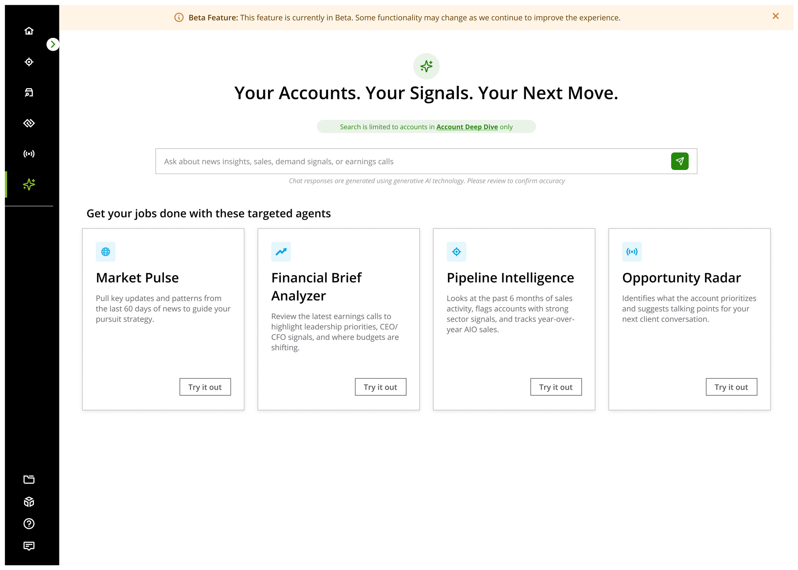
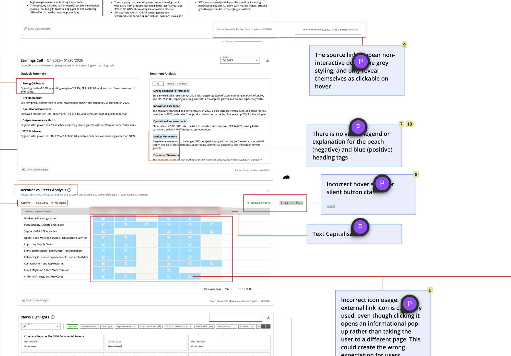
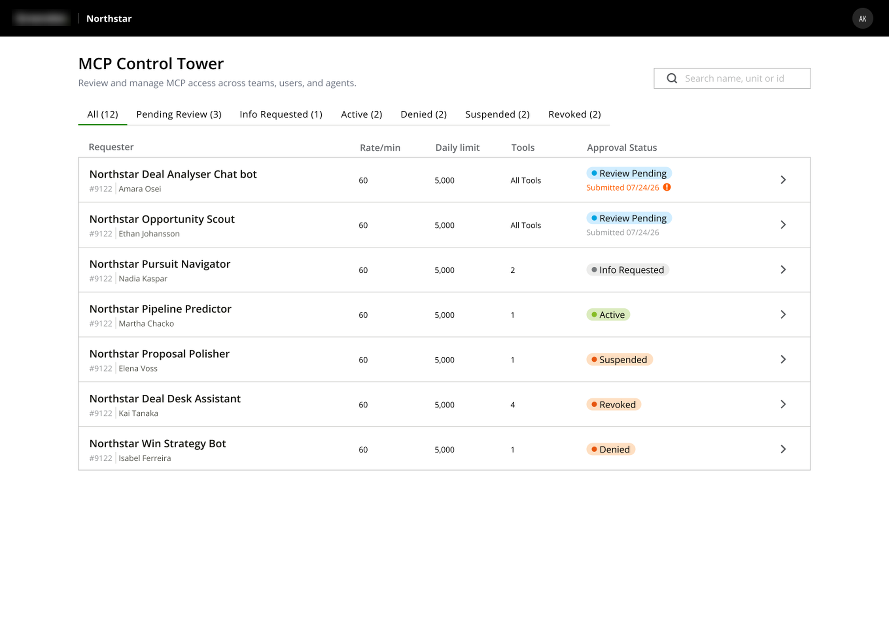
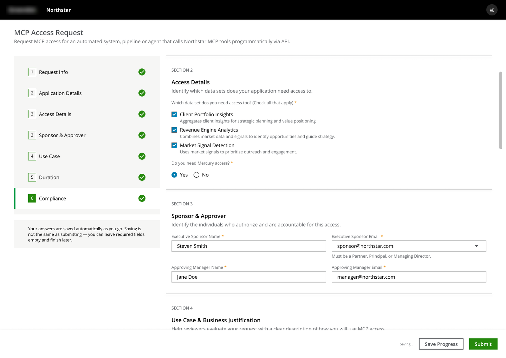
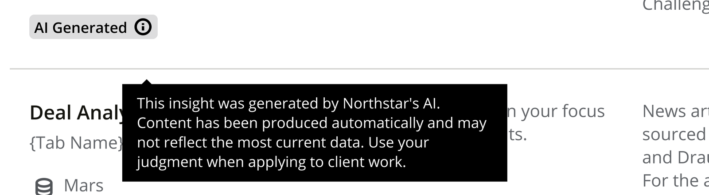

Internal tool work via Deloitte USI
Northstar
Designing inside an internal insights platform built for Deloitte leadership pitches

Project Goal & Scope
Northstar exists so Deloitte's leadership, partners, MDs, senior client-facing staff, can catch up on any account, current or prospective, without digging through several separate tools first.
Because it handles account and deal information and serves a narrow, senior, often less technical audience, most of the work here was about making dense information legible within a fixed design system. Increasingly, it was also about how AI-generated content inside the tool could be trusted, disclosed, and audited rather than taken at face value.
A locked design system meant new problems had to be solved with existing components, not new ones. That mattered more here than usual, given an older, senior audience where consistency was carrying real usability weight.
Task 1Heuristic Audit & Backlog Process
Problems
One core reporting area of the platform, spanning five sub-sections, had never had a dedicated audit behind it. New requirements kept getting built directly on top of what already existed, without anyone stepping back to look at the section as a whole. The same underlying problems (faint column separators, inconsistent component styling, unexplained icons) showed up repeatedly across different sub-sections, but nobody had documented them the same way twice.
Beyond that specific section, the team's sprint cadence relied entirely on organic feedback arriving from leadership through PMs. A quiet stretch between requirements could leave the design team without a clear next thing to work on.
Approach
I ran a full heuristic evaluation of that section end to end, across all five sub-sections, documenting every issue with a severity rating, a design-effort and dev-effort estimate, and a status. Where the same underlying problem reappeared in more than one sub-section, low-contrast column separators showed up in nearly every one, I counted it once as a single issue group rather than once per occurrence, so the backlog reflected distinct problems worth fixing rather than the same fix logged five separate times. Combined across the section, that produced 69 distinct issue groups.
From those findings, I set up a cadence, twice a week, dedicated specifically to working through audit items, and converted the highest-value findings directly into backlog stories. That way there was always a documented, prioritized set of design work available, even in weeks when the usual PM-to-designer flow didn't generate enough on its own.
Design decision
Treating this as a one-time cleanup would have fixed that section and left the same blind spots to resurface somewhere else. I chose instead to document the process itself: the severity/effort/status format, the grouping logic for repeated issues, the twice-weekly cadence, so it could be picked up by whoever ran the next audit, on the next section, without starting from zero. That process is what carried forward, not just the individual fixes.

Task 2Access Control Panel
Problems
Two separate internal explorations existed for how admins manage requests to Northstar's underlying data tools: one built around approving incoming requests, one built around managing access already granted. Each solved a real problem, but together they created a fragmented, error-prone editing experience. A live-access toggle could fire immediately with no confirmation, and editing something as basic as a rate limit meant leaving the main screen for a separate modal, while a related data-access toggle lived on a third surface entirely.
On top of that, requirements didn't hold still while the story was in progress. Leadership would prototype their own version of a screen using AI tools, land on something that read as visually modern, and then be disappointed when what shipped didn't match, without accounting for the fact that our actual design system, locked to a fixed set of components, made not all of it buildable.
Approach
I defined every request in the system as one of two types, and let that distinction drive the interface. A pending item's primary job is a decision (approve, reject, or request more information), while a reviewed item's primary job is management (edit access, adjust limits, suspend, or revoke). Both types open into one consolidated detail screen, not a small modal, containing every editable property for that item, with the original request kept visible as collapsed, read-only reference context underneath.
Nothing on that screen takes effect on interaction. Every toggle, dropdown, and field stays as staged, local state until an admin explicitly hits Save, with a clear indicator when there are unsaved changes and an explicit way to discard them.
Where a leadership-prototyped concept didn't fit within our components as they existed, I looked for ways to recombine or restyle what we already had: different arrangements, different use of existing spacing and hierarchy tokens, to get closer to that fresher feel without asking dev to build outside the system.
Design decision
Approve, reject, and request-info stay visually and functionally distinct from Save Changes, and suspend/revoke require an explicit confirmation with a stated reason, the same weight the original approval flow already gave to rejection. This tool grants access to leadership-only account and deal data, so an admin needed to always be able to tell, at a glance, whether they'd just tweaked a rate limit or approved someone's access to sensitive data.
When a stakeholder's AI-generated concept looked more modern than what we could ship, the easy path was to explain the constraint and stop there. I treated it as a design problem instead: finding real recombinations of existing components that moved toward what leadership wanted, rather than asking them to accept "that's not possible" as the final answer.

Task 3Access Request Intake Form
Problems
The same intake form had to serve two different kinds of requesters: a person requesting access for themselves, and someone requesting access on behalf of an automated application or service account, and only the second case needed a block of technical fields (hosting environment, data classification, technical owner). At seven sections long, there was a real risk a senior requester wouldn't finish it in one sitting.
Approach
I built this as a multi-step form with a left-side section nav and a live summary panel that updates as fields are filled in, so a requester always has a sense of where they are and what they've committed to. The application-specific section only renders at all once someone selects "Application / Service Account" over "Human User Access," rather than showing irrelevant fields to every requester.
For the return-to-draft problem, I looked at two approaches: autosave alone, versus autosave paired with an explicit manual "Save for Later" action. I went with both together, not an email-based reminder system. The audience here is a small number of senior, repeat, already-authenticated users, so the natural way back to an unfinished request is just logging back in, not an external nudge. Autosave alone can leave someone wondering whether anything actually saved; a manual button gives that same person the deliberate confirmation that it did, without needing to build and maintain a whole notification layer for a handful of returning users.

Task 4AI Transparency
Problems
Ask Northstar, the platform's AI chatbot, surfaces AI-generated summaries and answers pulled from live account, market, and news data, sitting directly alongside genuinely sensitive, leadership-only information. Different countries this platform operates in also carry different AI-disclosure requirements, which meant the same disclosure pattern couldn't just be a one-off decision made once and forgotten.
Approach
I designed a disclosure modal shown the first time someone uses the AI-assist feature, stating plainly that outputs are AI-generated and may be inaccurate, with a "don't show this again" option. I paired that with a persistent, inline reminder inside the chat composer itself, so the disclosure didn't disappear entirely once someone dismissed the modal. I also extended the same AI-assist labeling to other places AI-generated content surfaces in the product, exports and the Insights Catalog, to keep one consistent disclosure standard everywhere AI touches the platform.
The responsible-use policy itself, and which legal thresholds applied in which country, were defined by the PM and compliance side of the team, not by me. But wherever AI touched a story I owned, I made sure a visible, plain-language disclosure was actually part of the design, and looked for other places in the app where the same pattern should apply.
Design decision
Keeping a reminder live in the composer, even after someone dismissed the modal once, was a deliberate call rather than the easier one-and-done disclosure. The people using this content are taking it into real conversations with real clients. A disclosure someone could see once, dismiss, and never encounter again wasn't enough given what was at stake if they treated an AI-generated summary as verified fact rather than a starting point.

Impact
Northstar isn't a project with a single ship date. I joined it already live, and I'm still on it. The intake form is approved and sitting in the dev backlog; the access control panel is back with leadership for more requirements before it moves forward. The audit format and cadence I set up became a standing practice the team continues to use. The platform itself keeps growing, absorbing more of Deloitte's smaller internal tools as it becomes the intended single source of truth for leadership.
One pitch worth noting even without screens to show for it: Northstar organizes accounts into portfolios, similar to how a stock-trading app groups holdings. I proposed letting users subscribe to notifications by portfolio instead of one blanket on/off switch, so leadership could control notification volume around what they actually track rather than getting everything or nothing. It landed well and was adopted as a direction, though the flow itself hasn't been designed out yet.
As We Conclude
Most of what I'd point to from this project wasn't a single screen. It was a process meant to outlast the release it shipped in: an audit format built to be picked up by whoever ran the next one, an access model built around what an item is rather than what surface happened to be open, a disclosure pattern designed to survive being dismissed once. On a tool this dynamic, with requirements shifting release to release, that kind of systems-level thinking mattered more than any individual screen.